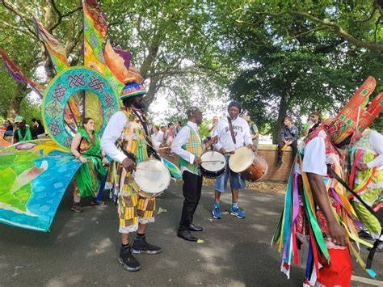
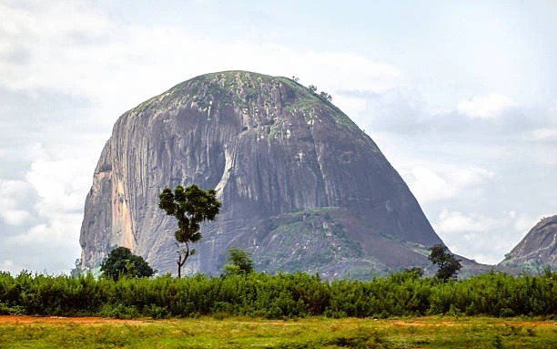

Olumirin Waterfall
Nature and waterfalls · Osun State
A country worth discovering
Nature and waterfalls · Osun State

Wildlife and conservation · Lagos State

History and heritage · Ogun State

Mountain scenery · Cross River State

Wildlife and nature · Bauchi State

Beaches and coastlines · Lagos State

Traditions and cultural experiences

Natural beauty and unforgettable journeys
Start exploring destinations and plan your Nigerian travel experience.
Browse Destinations